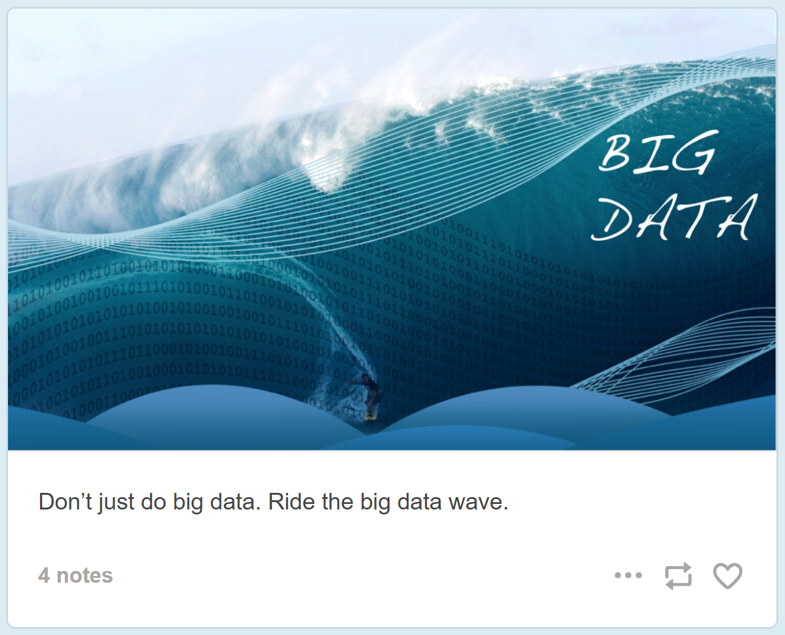

class: center, middle # 🏛 # Beyond the university: ## Mapping higher education after data science A thesis proposal by [Cory Salveson](http://corysalveson.com) --- # Questions ## 1. What **new institutional arrangements** are forming in higher education "online"? ## 2. What do these changes mean for **universities** and **knowledge**? --- # Approach .left-column[**Data Science** education has exploded in the last few years. Many "degree" programs now appear online. How are they different?] .right-column[<img src="./img/dsm.gif" width="100%" border="1px solid black" />] --- # Approach .left-column[**Data Science** education has exploded in the last few years. Many "degree" programs now appear online. How are they different?] .right-column[ - Cost? Who pays? - Role of government, industry, academia? - Pedagogy? - Social mobility? - Discourse? ] --- # Approach .left-column[**Data Science** education has exploded in the last few years. Many "degree" programs now appear online. How are they different?] .right-column[ - Cost? Who pays? - Role of government, industry, academia? - Pedagogy? - Social mobility? - Discourse? *** ### Structure: **comparative** ### Framing theory: **sociology of education** and **new institutional economics** ] ??? - Need to be able to structure and frame - Sociology of education = how does education "work" in social reality, e.g. in relation to the state - Code (Bernstein) - Habitus/Field Theory (Bourdieu) - NIE = how to arrangements of formal and informal rules, organizational formations, etc. develop; and what interests are expressed in how they are balanced --- # Methodology - Build **typology** of institutional forms for **comparative analysis** - Model **network** of institutions to analyze specific **power relationships**? - Discourse analysis? # Data - Dataset of all MOOCs offered since 2007.red[\*] - Scraping public web: GitHub, MOOC websites, universities - Policy and funding documents - Probably scope to United States only .footnote[.red[*] Tentative; courtesy of [Class-Central.com](https://www.class-central.com/)] --- # Expected Results & Significance  - Say something about a field of institutions and forces that haven't been studied together yet - Suggest some things about the implications of the above for the future of knowledge - Help sociology of education to *ride the big data wave* .footnote[Image from [Pictures of Big Data](https://bigdatapix.tumblr.com/)]